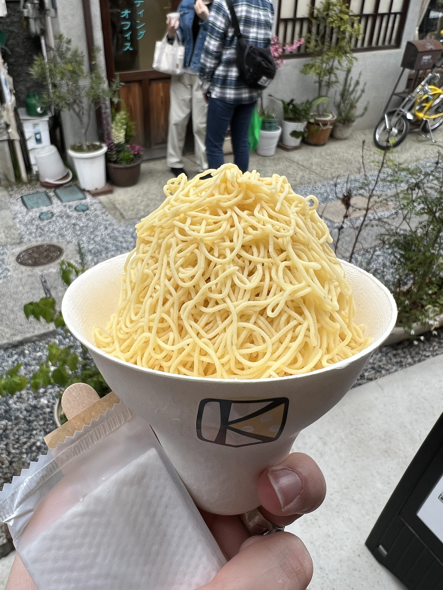

Kawagoe Cheese Cake

Location: Kawagoe, Saitama Prefecture
Price: $/€
Very unique sweet potato cheese cake in a mont blanc
form. "The cheesecake dough is made with the local specialty, sweet
potato, and is then poured directly into a Mont Blanc server and squeezed
onto raw silk, creating a Mont Blanc with a perfect combination of the
sweet potato's flavor and the richness of the cheese."
Yabaton

Location: Mostly in Nagoya but can also be found in Tokyo
and Osaka
Price: $$/€€
Restaurant that specializes in
deep-fried pork cutlets served with red soybean miso sauce (Misokatsu), a
Nagoya specialty! Some locations in Nagoya (typically the ones around
Nagoya station) are more popular than others, depending on that you might
end up having to line up for 30 minutes to an hour on a weekday evening
for instance.